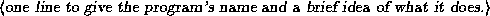
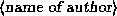
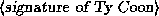

If you develop a new program, and you want it to be of the greatest possible use to the public, the best way to achieve this is to make it free software which everyone can redistribute and change under these terms.
To do so, attach the following notices to the program. It is safest to attach them to the start of each source file to most effectively convey the exclusion of warranty; and each file should have at least the ``copyright'' line and a pointer to where the full notice is found.
 Copyright ©19yy This program is free software; you can redistribute it and/or modify it under the terms of the GNU General Public License as published by the Free Software Foundation; either version 2 of the License, or (at your option) any later version.
This program is distributed in the hope that it will be useful, but WITHOUT ANY WARRANTY; without even the implied warranty of MERCHANTABILITY or FITNESS FOR A PARTICULAR PURPOSE. See the GNU General Public License for more details.
You should have received a copy of the GNU General Public License along with this program; if not, write to the Free Software Foundation, Inc., 675 Mass Ave, Cambridge, MA 02139, USA.
Also add information on how to contact you by electronic and paper mail.
If the program is interactive, make it output a short notice like this when it starts in an interactive mode:
Gnomovision version 69, Copyright (C) 19yy name of author Gnomovision comes with ABSOLUTELY NO WARRANTY; for details type `show w'. This is free software, and you are welcome to redistribute it under certain conditions; type `show c' for details.
The hypothetical commands `show w' and `show c' should show the appropriate parts of the General Public License. Of course, the commands you use may be called something other than `show w' and `show c'; they could even be mouse-clicks or menu items--whatever suits your program.
You should also get your employer (if you work as a programmer) or your school, if any, to sign a ``copyright disclaimer'' for the program, if necessary. Here is a sample; alter the names:
Yoyodyne, Inc., hereby disclaims all copyright interest in the program `Gnomovision' (which makes passes at compilers) written by James Hacker., 1 April 1989
Ty Coon, President of Vice
This General Public License does not permit incorporating your program into proprietary programs. If your program is a subroutine library, you may consider it more useful to permit linking proprietary applications with the library. If this is what you want to do, use the GNU Library General Public License instead of this License.